두 무리 사이,
어디에 선을 그어야 가장 안전할까
오늘은 질문 하나를 끝까지 따라갑니다
"두 종류의 점 사이에 선을 하나 긋는다면, 어디에 그어야 가장 안전한가?"
초평면 → 최대 마진 → 서포트 벡터 → 하드 마진 → 스케일링 → 소프트 마진 → ★ 벌점 C → 편향·분산
힌지 손실(심화) → 특징 공간 확장(그림으로) → 커널(심화) → 정리·다중 클래스·SVR(범위 밖)
무엇을 공부하고, 무엇을 넘겨도 되나
| 구분 | 교안 쪽 | 섹션 | 교수님 말씀 |
|---|---|---|---|
| 핵심 | 1–20 | 01–13 | 서포트 벡터를 어떻게 선정하고 마진을 어떻게 최대로 하는지 배운다. 벌점 매개변수 C는 시험에 잘 나온다 ★ |
| 심화 | 21–23 | 14 | 힌지 손실 — 시험에 직접 나오지 않음 |
| 그림으로 이해 | 24–27 | 15 | 특징 공간 확장 — 어려우니 그림으로 이해 |
| 심화 | 28–30 | 16 | 커널 — 사실상 공부 안 해도 되는 정도 |
| 범위 밖 | 31–33 | 17 | 31–32쪽 시험 범위 아님, SVR은 잘 안 쓴다고 하심 |
시험에서 식은 형태를 그대로 안내해 줍니다. 식 자체를 외워 쓰게 하는 문제는 내지 않습니다.
교안에 식을 넣은 것은 이해를 돕기 위해서이지 괴롭히려는 것이 아니니 겁먹지 않아도 됩니다.
그래서 이 자료는 식을 외우는 것이 아니라 식의 각 부분이 무슨 뜻인지를 풀어 두었습니다.
선형 SVM — 마진을 최대로
서포트 벡터 머신 Support Vector Machine, SVM
교안 첫 장은 SVM 원 논문 Support-Vector Networks(Cortes & Vapnik, Machine Learning 20권, 1995)의 첫 페이지입니다.
지난 차시 로지스틱 회귀는 "y = 1일 확률"을 구한 뒤 0.5로 분류했습니다. SVM도 같은 지도 학습 분류 모델이지만, 확률을 구하지 않고 두 클래스 사이에 경계를 어디에 그어야 가장 안전한가를 직접 찾습니다.
SVM이 서포트 벡터를 어떻게 선정하고 마진을 어떻게 최대로 하는지를 배웁니다.
커널 트릭은 심화라서 짚고 넘어가는 수준입니다.
교안의 정의 한 문장에 오늘 내용이 다 있습니다
Support vector machine (SVM) is a supervised learning model that constructs a decision boundary by maximizing the margin between classes, using support vectors, and extends to nonlinear boundaries through the kernel trick.
| 정의 속 표현 | 뜻 | 섹션 |
|---|---|---|
| supervised learning model | 지도 학습 모델 — 정답(레이블)이 있는 데이터로 학습 | — |
| decision boundary | 결정 경계 — 클래스를 나누는 선(면) | 02–04 |
| maximizing the margin | 경계와 가장 가까운 점 사이 거리(마진)를 최대로 | 05–06 |
| support vectors | 경계를 결정하는 일부 점(서포트 벡터) | 05, 10 |
| nonlinear · kernel trick | 곡선 경계를 커널 트릭으로 만듦 | 15–16 |
| 경계 모양 | 이름 | 특징 |
|---|---|---|
| 선형Linear | Hard Margin SVM (최대 마진 분류기) | 오분류를 전혀 허용하지 않음 |
| Soft Margin SVM (Linear SVM) | 일부 오분류·마진 위반을 허용 | |
| 비선형Nonlinear | Kernel SVM | 커널로 곡선 경계 |
초평면 What is Hyperplane?
초평면hyperplane은 데이터를 분류하는 결정 경계decision boundary입니다. 지난 차시 다중 회귀의 "선 → 면 → 초평면"의 그 초평면입니다.
정확한 정의: p차원 공간 안의 (p − 1)차원 평평한 부분공간이고, 공간을 두 개의 반쪽 공간half-spaces으로 나눕니다.
| 공간 p | 초평면 p − 1 | 모양 |
|---|---|---|
| 2차원 | 1차원 | 직선line |
| 3차원 | 2차원 | 평면plane |
| p차원 | p − 1차원 | 초평면 |
| β0 + β1X1 + ⋯ + βpXp = 0 | ||
차원별 초평면 (교안 4쪽)
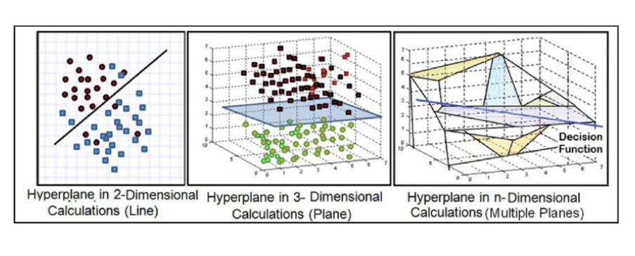
① 2차원: 직선 하나가 검붉은 점과 파란 사각형을 나눕니다.
② 3차원: 파란 평면이 위의 점과 아래 초록 점을 나눕니다.
③ n차원: 4차원 이상은 그릴 수 없어 여러 면과 결정 함수(Decision Function)로 개념만 보여 줍니다.
보충 — "평평하다(flat)": 식이 변수들의 1차식이라 휘지 않습니다. 곡선 경계는 15–16의 비선형 SVM에서 나옵니다.
분리 초평면 — 2차원 예시 Separating Hyperplane
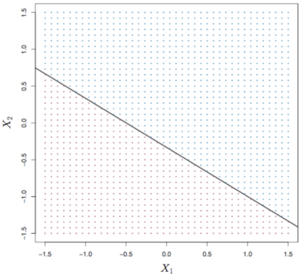
1 + 2X1 + 3X2 = 0
- 파란 영역: 1 + 2X₁ + 3X₂ > 0
- 보라 영역: 1 + 2X₁ + 3X₂ < 0
직선 위의 점은 식 값이 정확히 0입니다. 직선에서 벗어난 점은 식 값의 부호로 어느 쪽인지 알 수 있습니다.
직접 넣어 보면 — 부호가 곧 분류 규칙
| 점 | 1 + 2X₁ + 3X₂ | 어느 쪽 |
|---|---|---|
| (0, 0) | 1 + 0 + 0 = 1 | > 0 → 파란 영역 |
| (−1, 0) | 1 − 2 + 0 = −1 | < 0 → 보라 영역 |
| (1, −1) | 1 + 2 − 3 = 0 | 직선 위 |
새 점 x*가 들어오면 f(x*) = β0 + β1x1* + β2x2*를 계산해서 양수면 한 클래스, 음수면 다른 클래스로 분류합니다.
또 |f(x*)|가 클수록 점이 경계에서 멀리 있으므로 분류 결과를 더 믿을 수 있습니다.
분리 초평면으로 분류하기 — 선은 무한히 많다
- 아이디어: 분리 초평면으로 이진 분류binary classification
- 핵심 가정: 두 클래스가 선형 결정 경계로 나뉠 수 있다 = 선형 분리 가능linearly separable
- 초평면이 서로 다른 클래스를 나누는 결정 경계 역할
문제: 선형 분리가 가능하면 나누는 초평면은 하나가 아니라 무한히 많습니다. 그림의 세 직선은 모두 학습 데이터를 100% 맞게 나눕니다.
그렇다면 어느 것을 골라야 할까요? → 05
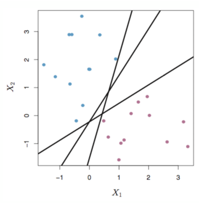
가장 멀리 떨어진 선을 고른다
자연스러운 선택은 최대 마진 초평면maximal margin hyperplane, 즉 학습 데이터에서 가장 멀리 떨어진 분리 초평면입니다.
| 마진Margin | 학습 데이터 중 초평면에 가장 가까운 점까지의 거리 |
| 서포트 벡터Support vectors | 초평면까지의 거리가 마진과 같은 학습 데이터 |

그림 읽기 · 왜 최대 · 서포트 벡터만 경계를 정한다
그림 읽기: 가운데 실선이 최대 마진 초평면, 양쪽 점선이 마진 경계입니다. 점선 위에 걸친 점 3개(파랑 2, 보라 1)가 서포트 벡터이고, 화살표 길이가 마진입니다. 실선은 두 점선의 정확히 가운데입니다.
왜 최대로: 경계가 한쪽에 붙어 있으면 근처에 새 점이 조금만 다르게 와도 오분류됩니다. 두 클래스 모두에서 가장 멀리 떨어진 경계가 여유가 가장 크므로 새 데이터에서도 잘 맞을 것(일반화)을 기대합니다.
서포트 벡터가 아닌 점은 마진 바깥에 있어서 조금 움직이거나 지워도 경계가 바뀌지 않습니다. 반대로 서포트 벡터가 움직이면 경계가 바뀝니다.
그래서 "서포트(support, 받치다) 벡터"입니다. 벡터 = 점 하나의 좌표 묶음 (x₁, x₂, …).
최대 마진 분류기 찾기 Hard Margin SVM
데이터 (x⃗(i), y(i))에서 레이블은 y(i) ∈ {−1, 1}입니다. 로지스틱 회귀는 0/1이었지만 SVM은 −1/+1을 씁니다. 위첨자 (i)는 i번째 데이터입니다.
maxβ0, …, βp M
subject to ∑j=1p βj2 = 1
y(i)(β0 + β1x1(i) + ⋯ + βpxp(i)) ≥ M, ∀i
y = 1일 때는 f(x) = β₀ + β₁x₁ + ⋯ + βₚxₚ가 M보다 커야 하고,
y = −1일 때는 −M보다 작아야 합니다. 그걸 보여 주는 식입니다.
두 조건이 한 줄로 합쳐지는 이유 — 레이블이 −1/+1
| 레이블 | 조건 | y를 곱하면 |
|---|---|---|
| y(i) = +1 | f(x(i)) ≥ M | (+1)·f ≥ M → 그대로 |
| y(i) = −1 | f(x(i)) ≤ −M | 양변에 −1을 곱하면 부등호가 뒤집혀 −f ≥ M, 즉 (−1)·f ≥ M |
두 줄 모두 y · f(x) ≥ M
이것이 레이블을 0/1이 아니라 −1/+1로 쓰는 이유입니다. 맞게 분류되면 y·f(x)가 양수, 틀리면 음수입니다.
식 읽는 법 — 한 줄씩
- max M: 마진 M을 가장 크게 만드는 β들을 찾습니다. "subject to" = "다음 조건을 지키면서".
- ∑βj² = 1: 계수 벡터 (β₁, …, βₚ)의 길이를 1로 고정(단위벡터). 이 조건이 있어야 아래 값이 실제 거리가 됩니다(이유는 07).
- y(i)·f(x(i)) ≥ M (모든 i): "모든 점이 맞는 쪽에 있고, 초평면에서 적어도 M만큼 떨어져 있다"
점 x에서 초평면 β₀ + β·x = 0까지의 거리는 |β0 + β·x| / ‖β‖입니다. ‖β‖ = √(β₁² + ⋯ + βₚ²)는 벡터의 길이.
‖β‖ = 1로 고정하면 분모가 1이 되어 |f(x)| 자체가 거리입니다. 고등학교의 "점과 직선 사이 거리 |ax₀ + by₀ + c| / √(a² + b²)"를 p차원으로 넓힌 것입니다.
서포트 벡터는 어떻게 선정되나 — 수업 핵심
서포트 벡터는 사람이 미리 고르는 것이 아니라 최적화 문제를 풀면 결과로 정해집니다.
- 마진 M을 키우려고 하면 경계 양쪽의 띠가 같은 폭으로 넓어집니다.
- 넓히다 보면 양쪽 클래스의 어떤 점에 먼저 닿습니다. 더 넓히면 그 점이 조건 y·f(x) ≥ M을 어기므로 거기서 멈춥니다 → 최대 마진.
- 이때 조건이 등호로 성립하는 점, y(i)·f(x(i)) = M인 점(띠 가장자리에 걸친 점)이 서포트 벡터입니다.
모든 점이 마진 바깥 맞는 쪽에 있어야 하므로 선형 분리 가능할 때만 해가 존재합니다.
한 점이라도 섞여 있으면 조건을 만족하는 β가 없습니다. 이 한계를 푸는 것이 10의 소프트 마진입니다.
2차원에서는 서포트 벡터가 보통 2~3개(양쪽에 적어도 1개씩)입니다.
점 4개로 직접 확인하기 보충 예제
+1 클래스: A(2, 0), B(3, 1)
−1 클래스: C(0, 0), D(−1, 1)
가장 가까운 두 점은 A와 C(거리 2). 둘의 가운데 x₁ = 1에 세로선을 그으면 마진이 1로 최대입니다. 경계: f(x) = x1 − 1 (β = (1, 0), 길이 1)
B나 D를 조금 옮겨도 경계는 그대로지만, A나 C를 옮기면 경계가 바뀝니다. scikit-learn으로 학습해도 같은 경계와 서포트 벡터가 나오는 것을 확인했습니다.
| 점 | y | f(x) | y·f(x) | 서포트 벡터? |
|---|---|---|---|---|
| A(2, 0) | +1 | 1 | 1 = M | 예 (등호) |
| B(3, 1) | +1 | 2 | 2 > M | 아니오 |
| C(0, 0) | −1 | −1 | 1 = M | 예 (등호) |
| D(−1, 1) | −1 | −2 | 2 > M | 아니오 |
법선벡터와 단위벡터 Normal Vector & Unit Vector
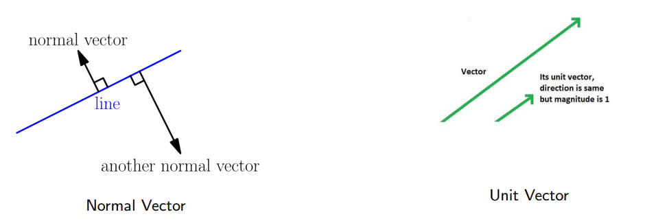
법선벡터: 면(또는 면 위의 한 점)에 수직인 벡터. 그림처럼 한 면에 수직인 벡터는 길이가 다른 것이 여러 개 있습니다.
단위벡터: 크기(길이)가 1인 벡터. 방향은 같고 길이만 1로 맞춘 것입니다.
초평면 β₀ + β₁X₁ + ⋯ + βₚXₚ = 0에서 β = (β₁, …, βₚ)가 법선벡터입니다. 그중 길이가 1인 것을 고르겠다는 조건이 ∑βj² = 1입니다.
단위벡터 조건이 없으면 생기는 문제 Why We Need Unit Vector?
두 경우는 같은 초평면입니다(두 번째 식 = 첫 번째 식 × 2).
Case 1: β = (1, 1), b = −5 ⇒ x1 + x2 − 5 = 0
Case 2: β = (2, 2), b = −10 ⇒ 2x1 + 2x2 − 10 = 0
학습 데이터 x(1) = (2, 2), y(1) = +1로 마진 값 y(βᵀx + b)를 계산하면
Case 1: M = (+1)(2 + 2 − 5) = −1
Case 2: M = (+1)(4 + 4 − 10) = −2
초평면은 그대로인데 값이 다릅니다. β를 키우기만 하면 "마진"을 얼마든지 크게 만들 수 있어 max M 문제가 의미를 잃습니다.
각 β를 자기 길이로 나누면
Case 1: ‖β‖ = √2 → −1/√2 ≈ −0.707
Case 2: ‖β‖ = 2√2 → −2/(2√2) ≈ −0.707
→ 같아집니다. 이 값이 실제 거리(0.707)입니다.
음수인 것은 점 (2, 2)가 y = +1인데 f < 0 쪽, 즉 틀린 쪽에 있다는 뜻입니다.
데이터 스케일의 중요성 Importance of Data Scale
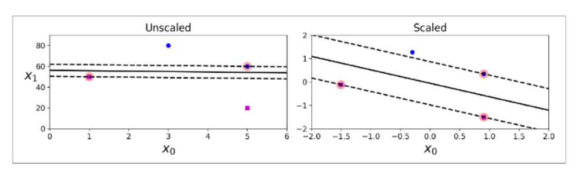
스케일 전: 특징 범위가 달라 법선벡터가 왜곡되고 마진이 잘못 정해집니다. x₀는 0~6, x₁은 0~80이라 x₁ 쪽 차이가 거리를 거의 다 차지해 경계가 수평에 가까워집니다.
스케일 후: 특징이 정규화되어 노름(길이)이 의미를 갖고, 올바른 최대 마진 초평면을 찾습니다. SVM은 거리로 판단하므로 스케일링이 필수입니다.
특징 스케일링 방법 두 가지 Feature Scaling Methods
| 표준화Standardization, Z-score | 최소-최대 정규화Min–Max Normalization | |
|---|---|---|
| 식 | x̃j = xj − μjσj | x̃j = xj − xjminxjmax − xjmin |
| 결과 | 평균 0, 분산 1 · 범위를 고정하지 않음 | 학습 데이터 값을 [0, 1]로 · 상대적 위치 유지 |
| 예 (보충) | 키 150, 160, 170 (μ = 160, σ ≈ 8.16) → 170은 ≈ 1.22 | 170 → (170 − 150)/(170 − 150) = 1 |
평균·표준편차·최솟값·최댓값은 학습 데이터에서만 계산하고, 검증·테스트 데이터에 그대로 다시 씁니다. 테스트로 다시 구하면 테스트 정보가 학습에 섞여(데이터 누수) 성능이 실제보다 좋게 나옵니다. SVM에서는 표준화가 흔히 쓰는 출발점입니다.
최대 마진 분류기의 단점 Disadvantage
- 개별 관측값 하나에 민감할 수 있다
- 학습 데이터에 과적합할 수 있다
그림 읽기: 파란 점 하나(빨간 원)가 보라 쪽 가까이 추가되자, 경계가 점선에서 실선으로 크게 기울었고 마진도 훨씬 좁아졌습니다. 하드 마진은 모든 점을 맞게 두어야 하므로 이 한 점에 맞추려고 경계 전체가 움직인 것입니다.
이 점이 측정 오류라면 새 경계는 새 데이터에 더 나쁠 수 있습니다 = 과적합. 선형 분리가 안 되면 해 자체가 없습니다. → 소프트 마진
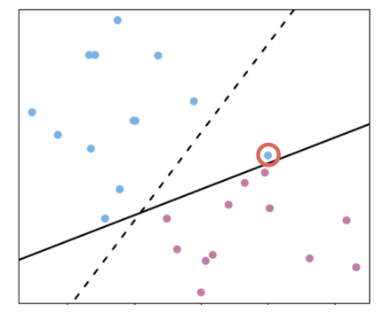
몇 개는 틀려도 된다 — 소프트 마진
소프트 마진 SVMsoft margin SVM도 초평면으로 분류합니다. 차이는 학습 데이터가 마진이나 초평면의 반대쪽에 있는 것을 허용한다는 점입니다. 클래스를 "거의" 나누는 마진입니다.
빨간 원 3개는 직선 반대쪽에 있거나 걸친 점입니다(위쪽 보라 점, 왼쪽 아래 보라 점, 직선 위의 파란 점).
몇 개를 틀리는 대신 점 하나에 경계가 흔들리지 않고(09 해결), 선형 분리가 안 되는 데이터에도 쓸 수 있습니다.

소프트 마진의 서포트 벡터

마진 위에 정확히 있는 점 + 자기 클래스 기준으로 마진의 반대쪽(안쪽)에 있는 점이 모두 서포트 벡터입니다. 교안: Some points are allowed to violate the margin (1, 8, 11, 12).
| 위치 | 점 번호 | SV? |
|---|---|---|
| 자기 쪽 마진 경계(점선) 위 | 7, 9 / 2 | 예 |
| 마진 안쪽, 초평면은 맞는 쪽 | 1, 8 | 예 |
| 초평면 반대쪽 (오분류) | 11, 12 | 예 |
| 자기 쪽 마진 바깥 | 3, 4, 5, 6 / 10 | 아니오 |
소프트 마진 SVM 찾기 — 슬랙 변수 slack variable εi
maxβ0, …, βp, ε1, …, εn M
subject to ∑j=1p βj2 = 1
y(i)(β0 + β1x1(i) + ⋯) ≥ M(1 − εi), ∀i
∑εi ≤ C, εi ≥ 0, ∀i
교안 16쪽은 첫 제약의 합이 j = 0부터로 적혀 있지만, 8쪽 하드 마진과 같게 j = 1로 적었습니다(확인 필요의 "고친 것").
≥ M → ≥ M(1 − εi): 점마다 εi만큼 조건을 느슨하게. εi = 0이면 하드 마진과 같은 조건.
∑εi ≤ C: 느슨하게 해 주는 양의 총합에 상한 C. 위반을 무한정 허용하면 아무 경계나 답이 되기 때문입니다.
εi 값으로 점의 위치 읽기
| εi | 점의 위치 | 10의 그림에서 |
|---|---|---|
| εi = 0 | 마진의 맞는 쪽 (마진 위 또는 바깥) | 2, 3, 4, 5, 6, 7, 9, 10 |
| 0 < εi ≤ 1 | 마진을 위반했지만 초평면은 맞는 쪽 | 1, 8 |
| εi > 1 | 초평면 반대쪽 = 오분류 | 11, 12 |
왜 1이 기준인가: 오른쪽 M(1 − εi)은 εi = 1일 때 0이 됩니다. y·f(x) ≥ 0은 "초평면의 맞는 쪽 또는 위"라는 뜻이므로, εi가 1을 넘으면 y·f(x)가 음수여도 되어 오분류까지 허용됩니다.
벌점 매개변수 C는 시험에 잘 나온다.
다음 장 표의 C 크기 ↔ 마진 폭 ↔ 과소적합/과적합 ↔ 편향/분산 관계를 한 묶음으로 말할 수 있어야 합니다.
벌점 매개변수 Penalty Parameter C
- C는 마진의 폭과 분류 오류를 얼마나 허용할지 사이의 균형(trade-off)을 조절
- C는 사람이 정하는 하이퍼파라미터hyperparameter이고 교차 검증cross-validation으로 고름. β처럼 학습되는 값이 아님
- C는 음수가 될 수 없음 (non-negative)
- C = 0이면 (해가 있다면) 최대 마진 분류기로 돌아감
- C를 작은 값에서 큰 값으로 바꾸면 편향-분산 트레이드오프(13)
| 작은 C | 큰 C | |
|---|---|---|
| 마진 | 넓음 | 좁음 |
| 동작 | 오류를 어느 정도 허용 → 단순한 모델 → 과소적합 | 오류를 최소화하려고 빡빡하게 → 과적합 |
| 편향·분산 | 편향 높음, 분산 낮음 | 편향 낮음, 분산 높음 |
교안 19쪽 표 그대로입니다. 시험에서는 이 표 기준으로 외우면 됩니다.
C에 따라 마진이 변한다 How C Influences the Margin
같은 데이터에 실선(초평면)과 점선(마진)을 그린 4개 패널입니다.
왼쪽 위 → 오른쪽 위 → 왼쪽 아래 → 오른쪽 아래 순으로 마진(점선 간격)이 점점 좁아집니다.
벌점 C 기준으로 읽으면 C가 커지는 순서입니다. 넓은 마진은 많은 점이 마진 안에 들어와 서포트 벡터가 많고, 좁은 마진은 서포트 벡터가 적습니다.

주의 — 교안 안에 C의 정의가 두 가지 섞여 있습니다
C를 무엇으로 정의하느냐에 따라 "C가 크면 마진이 넓다/좁다"가 정반대가 됩니다.
| 예산(budget) C — 교안 16·18쪽 | 벌점(penalty) C — 교안 19·22쪽 | |
|---|---|---|
| 식 | ∑εi ≤ C (위반 총량의 상한) | min ½‖β‖2 + C∑εi (위반 1단위당 벌점) |
| C가 크면 | 위반을 많이 허용 → 마진 넓음 | 위반이 비쌈 → 마진 좁음 |
| 하드 마진 | C = 0 | C → ∞ |
| 쓰는 곳 | ISLR 교재 | scikit-learn의 C, 대부분의 라이브러리 |
교안 19쪽 표(작은 C = 넓은 마진)는 벌점 기준이고, 18쪽 "C = 0이면 최대 마진 분류기"는 예산 기준에서만 맞습니다. 교수님이 어느 기준으로 설명하셨는지 확인 필요에 올려 두었습니다.
편향-분산 트레이드오프 Bias-Variance Tradeoff
C가 왜 과소적합·과적합과 연결되는지 이해하려면 편향과 분산을 알아야 합니다.
| 용어 | 뜻 | 과녁 그림에서 |
|---|---|---|
| 편향bias | 예측이 평균적으로 정답에서 벗어난 정도. 모델이 너무 단순해 패턴을 못 잡으면 커짐 | 점들의 중심이 과녁 중앙에서 떨어짐 |
| 분산variance | 학습 데이터가 조금 바뀔 때 예측이 흔들리는 정도. 너무 복잡해 잡음까지 따라가면 커짐 | 점들이 넓게 흩어짐 |
교안 20쪽 그림 세 개
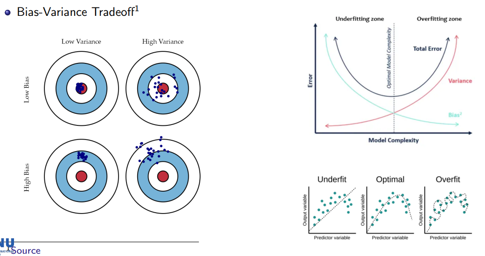
과녁: 같은 모델을 학습 데이터만 바꿔 여러 번 학습한 예측(남색 점). 왼쪽 위(저편향·저분산)가 목표, 오른쪽 위는 평균은 맞지만 매번 크게 달라지고, 왼쪽 아래는 매번 비슷하지만 다 같이 벗어남.
오차 그래프: 복잡도가 커질수록 Bias²는 줄고 Variance는 늘어 Total Error는 U자. 가운데 최솟값이 최적 복잡도. 왼쪽 = 과소적합 영역, 오른쪽 = 과적합 영역.
Underfit · Optimal · Overfit 과 벌점 C 연결
| Underfit (과소적합) | Optimal (적절) | Overfit (과적합) | |
|---|---|---|---|
| 모델 | 곡선 데이터에 직선 | 추세를 따르는 완만한 곡선 | 모든 점을 지나는 구불구불한 곡선 |
| 편향 / 분산 | 높음 / 낮음 | 균형 | 낮음 / 높음 |
| SVM (벌점 C) | C 작음, 마진 넓음 | 교차 검증으로 고른 C | C 큼, 마진 좁음 |
편향을 줄이면 분산이 늘고, 분산을 줄이면 편향이 느는 관계라서 "트레이드오프"입니다. 지난 차시 다항 회귀의 "degree가 커지면 구불구불해질 수 있다"가 오른쪽 과적합 그림입니다.
Part 1 정리 — 이것만은 외우기
선형 SVM · 교안 1–20쪽
- SVM = 마진(경계와 가장 가까운 점의 거리)을 최대로 하는 초평면을 찾는 분류 모델. 초평면 = p차원을 둘로 나누는 (p−1)차원 경계, f(x)의 부호로 분류.
- 서포트 벡터 = 마진 경계에 걸친 점(y·f(x) = M), 이 점들만 경계를 결정.
- y = +1이면 f ≥ M, y = −1이면 f ≤ −M → 합쳐서 y·f(x) ≥ M. ∑β² = 1로 값이 실제 거리가 되게.
- 스케일링 필수(거리 기반), 통계값은 학습 데이터에서만. 하드 마진은 점 하나에 민감 → 소프트 마진(슬랙 ε: 0 / 0~1 / 1 초과).
- ★ 벌점 C 작음 = 넓은 마진·과소적합·고편향 / C 큼 = 좁은 마진·과적합·고분산.
직선으로 안 될 때, 그리고 그 너머
소프트 마진과 힌지 손실 Hinge Loss
교안 21쪽부터는 심화입니다. 시험에 직접적으로 나오지 않는다는 뜻입니다.
(21–23쪽, 힌지 손실을 말씀하신 것으로 보임) "소프트 마진 SVM을 손실함수 최소화 형태로도 쓸 수 있다"는 흐름만 보고 넘어가면 됩니다.
같은 소프트 마진 문제를 지난 차시의 "손실함수를 최소화한다"는 형태로 바꿔 쓸 수 있습니다. 먼저 기호:
fβ(x) = β0 + ∑j=1p βjxj , ‖β‖22 = ∑j=1p βj2
세 단계로 힌지 손실이 나온다
- M = 1로 고정: ‖β‖ = 1로 고정하고 M을 키우는 대신, M = 1로 두고 β 길이를 자유롭게 해도 같은 초평면입니다. y(i)fβ(x(i)) ≥ 1 − εi, εi ≥ 0
- εi를 식으로: εi ≥ 1 − y·f(x)이고 εi ≥ 0 → εi ≥ max{0, 1 − y(i)fβ(x(i))}. ε는 작을수록 좋으니 최적에서는 등호. 이것이 힌지 손실입니다.
- 같은 문제의 두 모양:
min ½‖β‖22 + C ∑ max{0, 1 − y(i)fβ(x(i))} = min ½‖β‖22 + C ∑ εi s.t. y·f ≥ 1 − εi, εi ≥ 0
첫 항 ½‖β‖²를 줄이면 마진이 넓어지고(마진 = 1/‖β‖), 둘째 항을 줄이면 위반이 줄어듭니다. 두 목표가 충돌하고 C가 둘째 항의 무게입니다. C가 크면 위반을 줄이는 쪽을 중시해 마진이 좁아집니다 — 12의 "벌점 C"입니다.
힌지 손실 그래프
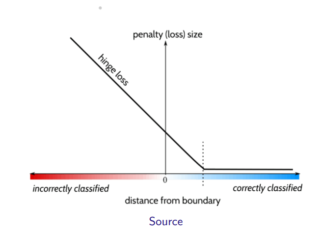
ℓhinge = max{0, 1 − y·f(x)}
| y·f(x) | 점의 상태 | 손실 |
|---|---|---|
| ≥ 1 | 맞게 분류, 마진 바깥 | 0 |
| 0 ~ 1 | 맞게 분류, 마진 안쪽 | 0~1 사이 |
| < 0 | 오분류 | 1보다 크고 선형 증가 |
예: y = +1, f = 0.3 → 0.7 · y = +1, f = −0.5 → 1.5 · y = −1, f = −2 → y·f = 2 → 0
직선으로 절대 안 되는 데이터
데이터에 따라서는 C를 어떻게 정해도 선형 경계가 아예 통하지 않습니다.
보라 점은 가운데 대각선 띠에, 파란 점은 그 양쪽 바깥에 있습니다. 직선(실선)과 마진(점선)이 보라 무리를 가로지를 뿐 두 클래스를 나누지 못합니다.
이 부분은 어려우니 그림으로 이해하면 됩니다. "2차원에서는 직선으로 안 나뉘던 점들이, 축을 하나 더하면 평면 하나로 나뉜다"만 눈으로 확인하세요.
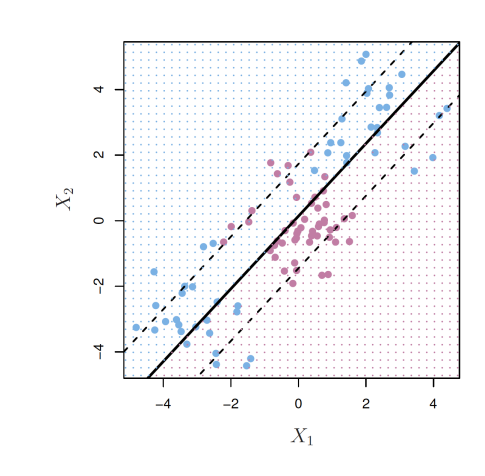
XOR 배치 — 축 x₁x₂를 하나 더하면 Expanding Feature Space

왼쪽 위·오른쪽 아래(빨간 ×)는 x₁과 x₂의 부호가 달라 x₁·x₂ < 0, 오른쪽 위·왼쪽 아래(초록 ●)는 부호가 같아 x₁·x₂ > 0입니다. 새 특징 x₁·x₂를 세 번째 축으로 추가하면 평면 x₁·x₂ = 0 하나로 두 클래스가 나뉩니다.
원형 데이터 — 높이 축을 더하면 그릇 모양
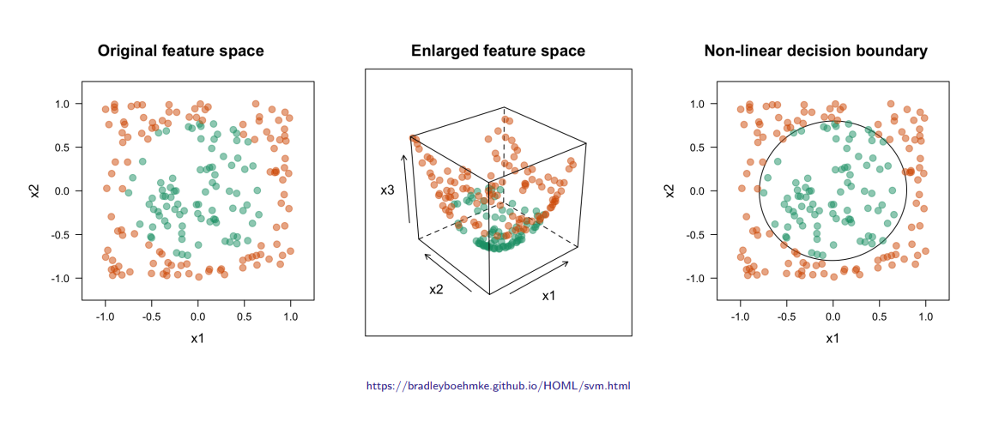
① 원래 공간: 초록(가운데)과 주황(바깥)은 직선으로 나눌 수 없음
② 확장: 세 번째 축 x3(예: x₁² + x₂²)을 추가하면 초록은 바닥, 주황은 위 → 평면 하나로 나뉨
③ 되돌리기: 그 평면을 원래 2차원에서 보면 경계가 원(곡선)
일반적인 방법 — 제곱 특징 추가 (교안 27쪽)
원래 특징이 p개면 각 특징의 제곱을 추가해 2p개로 늘립니다.
X⃗ = (X1, …, Xp) → (X1, X12, X2, X22, …, Xp, Xp2) = (X̃1, …, X̃2p)
확장된 공간에서는 선형 초평면:
β0 + β1X̃1 + ⋯ + β2pX̃2p = 0
원래 공간에서는 비선형 경계:
β0 + β1X1 + β2X12 + ⋯ + β2pXp2 = 0
지난 차시 다항 회귀가 "x²를 새 변수로 보면 선형 회귀"였던 것과 같은 원리입니다.
하지만 x₁x₂ 같은 곱, 세제곱을 계속 추가하면 특징 수가 폭발합니다. 특징 100개의 2차 항만 해도 100 + 100·99/2 = 5,050개. 이를 피하는 것이 다음 섹션의 커널입니다.
비선형 SVM과 커널 Kernel
교안 28–30쪽도 심화(사실 공부 안 해도 되는 정도)입니다.
커널 트릭은 짚고 넘어가는 수준. "커널로 데이터를 고차원으로 (암묵적으로) 옮겨 곡선 경계를 만든다"와 커널 3가지 이름 정도만.
- 비선형 SVM은 소프트 마진 SVM에 커널 함수를 써서 비선형 결정 경계를 만듦
- 커널 함수 K = 내적(inner product)의 일반화 — 두 입력을 받아 어떤 특징 공간에서의 내적을 암묵적으로implicitly 계산
- 데이터를 (암묵적으로) 고차원으로 옮기고, 그 공간에서 선형 결정 경계(초평면)로 SVM 적용
내적을 커널로 바꾸면 비선형 SVM
선형 SVM의 결정함수는 이렇게 쓸 수 있습니다(유도는 교안 범위 밖). S = 서포트 벡터의 인덱스 집합.
f(x) = β0 + ∑i∈S αi ⟨x(i), x⟩
비선형 SVM은 내적을 커널로 바꿉니다.
f(x) = β0 + ∑i∈S αi K(x(i), x)
서포트 벡터가 아닌 점은 식에서 빠지므로 "서포트 벡터만 경계를 결정한다"가 식으로도 보입니다.
| 커널 | 식 | 경계 |
|---|---|---|
| 선형Linear | ⟨x, x′⟩ | 직선(초평면) |
| 다항 (차수 p)Polynomial | (1 + ⟨x, x′⟩)p | p차 곡선 |
| RBFRadial basis function | exp(−γ‖x − x′‖2) | 원·섬 등 매우 유연 |
보충: 내적 ⟨a, b⟩ = a₁b₁ + ⋯ + aₚbₚ. 예: ⟨(1, 2), (3, 4)⟩ = 11. RBF는 두 점이 같으면 1, 멀수록 0. γ가 클수록 경계가 구불구불(과적합 쪽).
커널 트릭이 계산을 줄이는 원리 보충 · 읽고 넘어가도 됨
2차원 x = (x₁, x₂), x′ = (x₁′, x₂′)에서 2차 다항 커널 (1 + ⟨x, x′⟩)²를 전개하면
1 + 2x1x1′ + 2x2x2′ + x12x1′2 + x22x2′2 + 2x1x2x1′x2′
이것은 6차원 특징 φ(x) = (1, √2x₁, √2x₂, x₁², x₂², √2x₁x₂)끼리의 내적과 정확히 같습니다.
즉 6차원 특징을 만들지 않고, 2차원 내적 하나를 계산해 제곱하는 것으로 6차원 내적을 얻습니다. 15에서 특징 수가 폭발하던 문제를 이렇게 피합니다. 이것이 "암묵적으로 고차원으로 옮긴다"의 뜻입니다.
SVM 정리 SVM Summary 시험 범위 아님
교안 31–32쪽은 시험 범위가 아닙니다. 33쪽 SVR도 잘 쓰지 않는다고 하셨으니 읽어 보는 정도로 넘어가면 됩니다.
- 정규화 매개변수 C가 과적합을 막아 줌
- 커널로 결정 경계 모양을 유연하게
- 최적화 문제가 볼록convex → 해가 하나
- 하이퍼파라미터(C, 커널 함수 등)를 조정해야 함
- 이진 분류 형태로 바꿔야 함
- 해석하기 어려움
보충: 볼록 = 손실 그래프가 그릇 모양이라 골짜기(최솟값)가 하나뿐 → 어디서 시작해도 같은 답. 해석 어려움 = 커널 SVM의 경계는 고차원에 있어 특징별 영향으로 읽기 어려움.
다중 클래스 SVM Multi-class SVM 시험 범위 아님

| 일대다One vs all | 일대일One vs one | |
|---|---|---|
| 방법 | 클래스마다 "그 클래스 vs 나머지 전부" | 클래스 두 개씩 짝지어 |
| 분류기 수 | K개 | K(K − 1)/2개 |
| 예측 | f(x)가 가장 큰 클래스 | 짝 대결 투표에서 가장 많이 이긴 클래스 |
K = 3이면 둘 다 3개라 그림의 직선 수가 같습니다. K = 10이면 10개 vs 45개.
서포트 벡터 회귀 Support Vector Regression, SVR
SVR은 잘 쓰지 않는다고 하셨습니다. "SVM의 아이디어를 회귀에도 쓸 수 있다" 정도만.
분류 SVM은 마진 안에 점이 없도록 하지만, SVR은 반대로 점들이 마진 띠(튜브) 안에 최대한 들어오도록 직선을 맞춥니다.
띠 안의 점은 오차 0, 띠 밖으로 벗어난 만큼만 손실. 띠 경계 위나 밖의 점이 서포트 벡터. 선형 회귀가 모든 점의 오차 제곱을 더한 것(RSS)과 다릅니다.
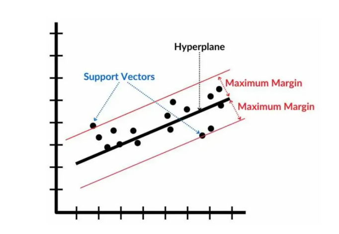
로지스틱 회귀 vs SVM — 한 장 비교 보충
| 로지스틱 회귀 (6주차 1차시) | SVM (오늘) | |
|---|---|---|
| 레이블 | 0 / 1 | −1 / +1 |
| 출력 | y = 1일 확률 p(x) | f(x)의 부호 (확률 아님) |
| 경계를 정하는 점 | 모든 학습 점 | 서포트 벡터만 |
| 기준 | 우도 최대 | 마진 최대 |
자주 헷갈리는 것: 마진은 가장 가까운 점까지의 거리(평균 거리 아님) · 슬랙 ε 0 / 0~1 / 1 초과 · C의 방향은 정의에 따라 반대 · 힌지 손실·커널은 심화, 31–32쪽은 범위 밖.
용어 정리 ① — 하드 마진까지
| 초평면hyperplane | p차원 공간을 둘로 나누는 (p−1)차원 평평한 경계. f(x) = β₀ + β₁x₁ + ⋯ = 0. |
| 결정 경계 | 클래스를 나누는 경계. f(x)의 부호로 어느 쪽인지 판단. |
| 선형 분리 가능 | 직선(초평면) 하나로 두 클래스를 완벽히 나눌 수 있는 상태. |
| 마진margin | 초평면과 가장 가까운 학습 점 사이의 거리. |
| 서포트 벡터 | 마진 경계 위의 점(소프트 마진은 + 위반한 점). 이 점들만 경계를 결정. |
| 최대 마진 분류기 | 하드 마진 SVM. 오분류를 전혀 허용하지 않고 마진 최대화. 선형 분리 가능할 때만 해가 있음. |
| 법선벡터 · 단위벡터 | 면에 수직인 벡터 / 길이 1인 벡터. β가 초평면의 법선벡터. |
| 표준화 · 최소-최대 | (x−μ)/σ로 평균 0·분산 1 / [0, 1]로. 통계값은 학습 데이터에서만. |
용어 정리 ② — 소프트 마진부터
| 소프트 마진 | 일부 점이 마진·초평면 반대쪽에 있는 것을 허용하는 마진. |
| 슬랙 변수 εi | 점 i의 위반 정도. 0 정상 / 0~1 마진 위반 / 1 초과 오분류. |
| 벌점 매개변수 C ★ | 마진 폭 vs 오류 허용의 균형. (벌점 기준) 크면 좁은 마진·과적합. |
| 하이퍼파라미터 | 학습으로 정해지지 않고 사람이 정하는 값(C 등). 교차 검증으로 고름. |
| 편향 · 분산 | 평균적으로 정답에서 벗어난 정도 / 데이터에 따라 흔들리는 정도. |
| 특징 공간 확장 | x², x₁x₂ 같은 새 특징을 추가해 고차원에서 선형으로 나눔. |
| 힌지 손실 (심화) | max{0, 1 − y·f(x)}. 마진 밖이면 0, 어길수록 커짐. |
| 커널 (심화) | 고차원 특징 공간의 내적을 직접 계산하는 함수. 선형·다항·RBF. |
| 일대다 · 일대일 · SVR (범위 밖) | K개 / K(K−1)/2개 이진 SVM으로 다중 클래스 · 점들이 마진 띠 안에 들어오도록 맞추는 회귀. |
확인 필요
C가 시험에 잘 나온다고 하셔서 특히 확인이 필요합니다.
16·18쪽: 예산 C (∑εᵢ ≤ C, C = 0이면 하드 마진, C가 크면 마진 넓음)
19·22쪽: 벌점 C (½‖β‖² + C∑εᵢ, C가 크면 마진 좁음)
교수님이 어느 쪽 기준으로 설명하셨나요? (12)
- 16쪽 소프트 마진 제약 ∑j=0p βj² = 1 → ∑j=1p (8쪽 하드 마진과 같게, 절편 β₀은 길이 조건에서 제외)
- 12쪽 "tandardization" → Standardization (첫 글자 누락)
예상 문제 안내
교수님이 "식은 형태를 안내하고 식 자체는 내지 않는다", "C는 시험에 잘 나온다"고 하셔서 개념·해석 위주로 만들었습니다. 심화(14, 16)는 제외했습니다.
문제는 예상이며 실제 출제와 다를 수 있습니다. 정답 칸을 눌러야 답이 보입니다.
- 학습 데이터 전체를 말한다.
- 초평면에서 가장 멀리 떨어진 점들이다.
- 초평면까지의 거리가 마진과 같은 점들이며, 이 점들만 경계를 결정한다.
- 학습 전에 사람이 직접 골라 주는 점이다.
- 마진이 넓어지고 과소적합 경향이 생긴다.
- 마진이 좁아지고 과적합 경향이 생기며, 편향은 낮고 분산은 높다.
- 마진은 변하지 않고 서포트 벡터 수만 늘어난다.
- C는 학습으로 자동으로 정해지므로 바꿀 수 없다.
교안에 자주 나오는 단어 ①
| hyperplane /ˈhaɪpərpleɪn/ n. | 초평면 — 공간을 둘로 나누는 평평한 경계 (2D에서는 직선) In 2D, a hyperplane is a line. 2차원에서 초평면은 직선이다. |
| margin /ˈmɑːrdʒɪn/ n. | 마진 — 경계와 가장 가까운 점 사이의 거리 SVM chooses the boundary with the largest margin. SVM은 마진이 가장 큰 경계를 고른다. |
| separable /ˈsepərəbl/ adj. | 분리 가능한 — 경계로 나눌 수 있는 The two classes are linearly separable. 두 클래스는 선형으로 분리 가능하다. |
| perpendicular /ˌpɜːrpənˈdɪkjələr/ adj. | 수직인 — 90도로 만나는 A normal vector is perpendicular to the plane. 법선벡터는 평면에 수직이다. |
교안에 자주 나오는 단어 ②
| magnitude /ˈmæɡnɪtuːd/ n. | 크기 — 벡터의 길이 A unit vector has a magnitude of 1. 단위벡터는 크기가 1이다. |
| slack /slæk/ n. / adj. | 여유, 느슨함 — 슬랙 변수: 조건을 얼마나 어겼는지 나타내는 값 Each point has a slack variable εᵢ. 각 점에는 슬랙 변수 εᵢ가 있다. |
| penalty /ˈpenəlti/ n. | 벌점, 벌칙 — 오류에 매기는 대가 A large penalty C makes the margin small. 벌점 C가 크면 마진이 좁아진다. |
| trade-off /ˈtreɪd ɔːf/ n. | 트레이드오프 — 하나를 얻으면 다른 하나를 잃는 관계 There is a trade-off between bias and variance. 편향과 분산 사이에는 트레이드오프가 있다. |
필기 원문 ① — 수업 중 보내주신 그대로
| 01 13:54 | 6-2 수업(10월 12일 월요일) |
| 02 15:26 | svm이 support vector을 어떻게 선정하며 마진을 어떻게 최대로 하는지 배우고 커널트릭은 심화라서 짚고 넘어가는 수준 4쪽 사진 보완 필요할거같아. 첨부할게 |
| 03 15:40 | 교수님 시험에 식 형태는 그대로 안내심(식 자체를 내진 않음. 겁먹지 말것. 교안에 식을 넣으시는건 이해를 위한 것이지 괴롭히기 위함이 아님) 8페이지 y가 1일 때는 M보다 커야한다는거 -1일때느 -M보다 작아야한다. 그걸 보여주는 식임 11페이지 이미지 이미지 그래도 교안에 나온거 중심으로 하는게 좋을거같아. |
| 04 15:48 | 1. 15페이지 사진이야 2. 14페이지 사진 |
| 05 15:55 | 벌점 매개변수 C는 시험에 잘 나온다는 식으로 언급하심 |
필기 원문 ②
| 06 15:57 | 20페이지 사진 이거 보고 다시 보완해줘 |
| 07 16:01 | 21페이지부터 심화(시험에 직접적으로 안나온다는 얘기임) (아마 21-23페이지 말씀하신거같음) |
| 08 16:03 | 24-25페이지 사진이야. 그리고 교수님께서 이 부분 어려우니까 그림으로 이해하면 된다고 말씀하심 |
| 09 16:07 | 28페이지-30페이지도 심화(사실 공부 안해도 되는 정도) |
| 10 16:10 | 32페이지 사진 마지막으로 보내줄게 끝. 정리해줘. 마찬가지로 정말 세세하게 이해하기 쉽게 교과서 정도로 구성ㅇ해줘야해. 너무 어려워서. |
| 11 16:12 | 마지막으로 33페이지 사진(잘 안쓴다고 하심) |
| 12 10.15 15:14 | 31-32 시험범위 아님 |